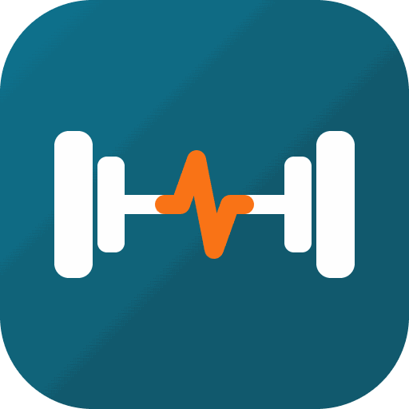

Haftada 3 gün · Tüm Vücut A / B / C · Sakin tempo
Kas gelişimi için "Aşamalı Yüklenme" şarttır, ama yavaş ve sakin. "Çift Yükseltme" metodunu kullanın:
Bir seti işaretlediğinizde dinlenme sayacı otomatik başlar. Süreler kalbi zorlamamak için bilerek uzun tutuldu.
1 Saat Tempolu Yürüyüş
Ağırlık antrenmanı yaptığınız 3 günün hemen sonrasında, konuşabileceğiniz bir tempoda. Yağ yakımı ve anksiyete için en etkili egzersizlerden biri.
Dinlenme günlerinde 30 dk sakin yürüyüş de ekleyebilirsiniz.
Bu uygulamayı ana ekranınıza ekleyerek daha hızlı erişim sağlayın ve çevrimdışı kullanın.
Bu 10-15 dakikalık rutin, sakatlıkları önler ve performansı artırır.
Yürüyüş bandı veya bisiklet. Vücut ısısını yükseltmek ve kan akışını hızlandırmak için hafif-orta tempoda, terlemeye başlayana kadar devam edin.
Eklemleri ve kasları hareket açıklığı boyunca ısıtın.
Günün kaslarını harekete hazırlayın.
Artık ana antrenmana hazırsınız!